Primary
성지순례형
29세 · 직장인
특정 작품에 대한 애정이 깊어 배경지를 정확히 찾아갑니다. 장소는 잘 찾지만 흩어진 위치를 하나의 동선으로 정리하는 데서 막힙니다.
니즈
“저장은 스무 개 해뒀는데, 어디부터 가야 할지를 모르겠어요.”
작품 속 배경이 된 실제 장소를 찾고, 저장하고, 하루 코스로 완성하는 성지순례 가이드 앱입니다. 블로그·지도·커뮤니티를 오가느라 식어버리던 “가보고 싶다”는 마음을 하나의 앱 안에서 끝까지 끌고 가도록 설계했습니다.
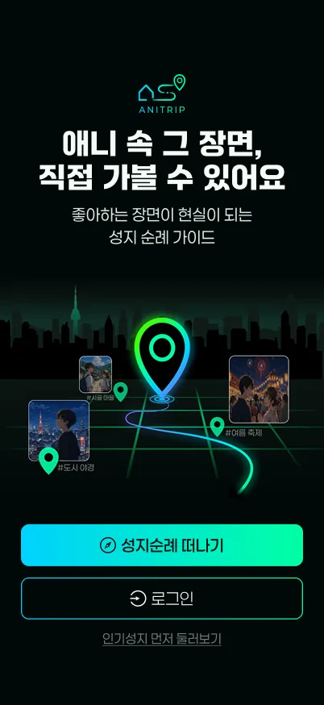
20~30대 애니 시청자 3명을 대상으로 3일간 다이어리 리서치를 진행했습니다.
세 명 모두 시청 직후 강한 여행 욕구를 보였지만, 단 한 명도 계획 단계까지 도달하지 못했습니다.
문제는 “가고 싶은 마음”이 아니라 마음과 실행 사이에 낀 탐색 비용이었습니다.
시청 직후부터 포기까지 · 다이어리 리서치 3일 기반
페르소나
박준호 · 29세 직장인
특정 작품에 애정이 깊어 배경지를 정확히 찾아가고 싶어 한다. 장소를 찾는 것 자체는 익숙하지만, 흩어진 위치를 하나의 동선으로 묶는 데서 막힌다.
상황
체인소맨을 보고 특정 장면의 배경지가 궁금해졌다. 인스타그램으로 몇 곳을 찾아 저장해뒀고, 사흘 뒤 주말 일정을 짜보려 지도 앱을 열었다.
목표
저장해둔 성지들을 하루에 돌 수 있는 순서로 묶어 실제로 다녀오고, 작품과 같은 구도로 사진을 남긴다.
Insight
감정은 탐색 단계에서 처음 꺾이지만, 그 지점에서 이탈하는 사용자는 애초에 여행까지 가지 않는다. 반면 스스로 장소를 찾아내고 저장까지 해낸 사용자는 마지막 단계인 동선 구성에서 멈춘다. 이미 의지를 증명한 사람이 실행 직전에 놓치는 지점이라, 여기를 먼저 이었다.
Problem Statement
애니 속 장소를 찾아내고 저장까지 한 사용자도, 흩어진 장소를 하나의 동선으로 묶는 단계에서 여행을 포기한다
인터뷰 대상을 세 유형으로 나눴습니다. 애정의 깊이는 다르지만, 셋 다 단순 관광이 아니라 스토리가 얹힌 경험을 원한다는 공통점이 있었습니다.
29세 · 직장인
특정 작품에 대한 애정이 깊어 배경지를 정확히 찾아갑니다. 장소는 잘 찾지만 흩어진 위치를 하나의 동선으로 정리하는 데서 막힙니다.
니즈
“저장은 스무 개 해뒀는데, 어디부터 가야 할지를 모르겠어요.”
26세 · 콘텐츠 마케터
장면의 분위기를 사진으로 남기고 싶어 합니다. 인스타그램으로 장소를 저장하지만, 계획을 세우는 과정이 번거로워 실제 방문까지 이어지지 않습니다.
니즈
“같은 구도로 사진 찍고 싶어요. 근데 그 골목이 어디인지를 모르겠어요.”
34세 · 직장인
애니를 가볍게 소비하지만 새로운 여행지를 찾습니다. 계획을 짜는 과정 자체를 부담스러워해 추천받아 바로 실행할 수 있는 경험을 선호합니다.
니즈
“고민 없이 하루 코스만 딱 짜여 있으면 좋겠어요.”
세 유형 중 저장과 계획 단계까지 도달하는 유일한 유형이다. 감성 기록형과 라이트 여행자는 탐색 단계에서 이탈해, 자동 코스 생성 같은 핵심 기능을 쓸 기회 자체가 오지 않는다. 가장 멀리 간 사람의 여정을 기준으로 삼아야 모든 이탈 지점이 관측된다. 다만 이 유형은 셋 중 가장 좁다. 성지순례형에게서 검증된 흐름을 감성 기록형까지 넓히는 것이 다음 과제다.
여정에서 발견한 세 개의 이탈 지점에 각각 하나의 기능을 붙였습니다. 기능을 늘리는 대신, 이미 끊긴 곳만 정확히 이었습니다.
작품·태그·분위기로 먼저 좁히고, 상세 화면에서 AI 요약이 주소·가까운 역·추천 시간대·등장 작품을 한 번에 정리해 줍니다. “여기가 진짜 그 장소인가?”를 확인하려고 앱을 나갈 일이 없도록, 작품 속 원본 장면과 방문 후기를 같은 스크롤 안에 배치했습니다.
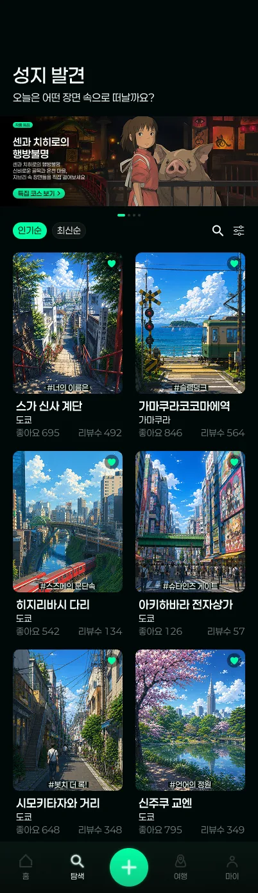
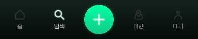
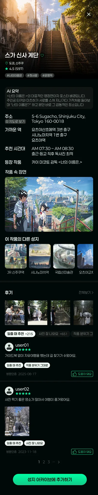
설계 포인트
상세 화면의 정보 순서를 판단 순서에 맞췄습니다. 주소와 가까운 역이 먼저(‘어디인가’), 작품 속 원본 장면이 그다음(‘진짜 맞나’), 방문 후기가 마지막(‘가볼 만한가’)입니다.
저장 목록에서 성지를 고르면 이동 수단과 소요 시간이 붙은 순서로 자동 정렬됩니다. ‘하루 압축 / 최소 환승 / 도보 위주 / 여유롭게 / 사진 위주’ 다섯 가지 성향 필터로 같은 성지 조합에서도 다른 코스가 나오게 했습니다.
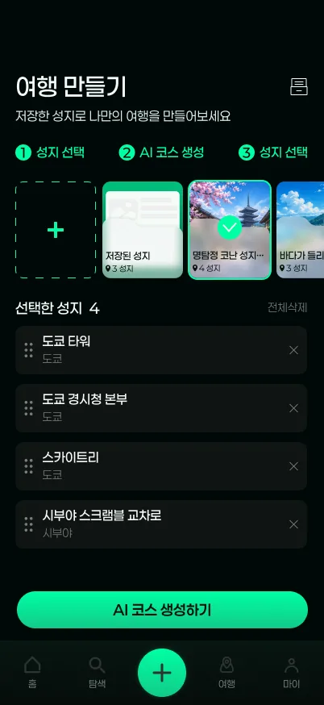
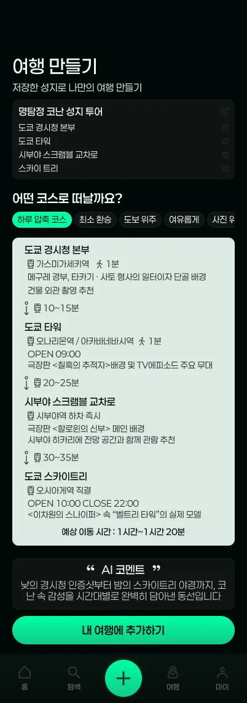
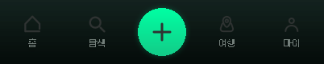
설계 포인트
자동 생성 결과를 그대로 확정하지 않고 ‘내 여행에 추가하기’ 한 단계를 남겼습니다. AI가 짠 동선을 사용자가 최종 결정한다는 감각을 유지하기 위해서입니다.
방문한 성지·정복한 작품·획득 업적을 한 화면에 모으고, 작품별 달성률을 진행 바로 보여줍니다. 여행이 끝나면 앱을 지우는 대신, 다음 작품을 정복하러 돌아올 이유를 남기는 구조입니다.
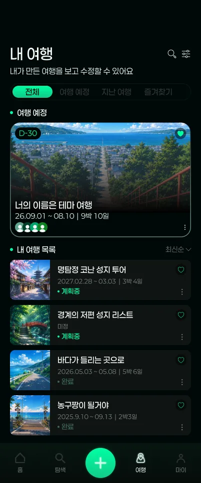
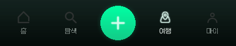
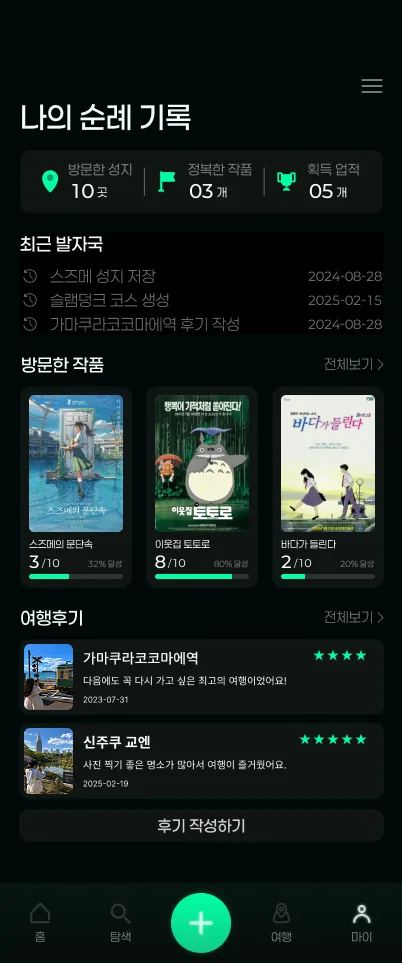
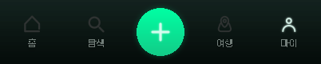
설계 포인트
작품별 달성률을 3/10처럼 미완성 상태로 보여줍니다. 방문한 곳의 개수만 세면 기록은 끝난 일이 되지만, 남은 칸이 보이면 다음 방문의 이유가 됩니다. 다만 수집을 압박하는 인상이 될 수 있어 진행 바까지만 두고, 알림이나 순위 경쟁은 넣지 않았습니다.
0
방문한 성지
0
정복한 작품
0
획득 업적
첫 진입부터 여행 기록까지. 화면을 누르면 원본 크기로 볼 수 있고, 설정의 사이드바는 인터랙션까지 확인할 수 있습니다.
화면의 대부분을 성지 사진과 애니 스틸컷이 차지합니다. 배경이 이미지와 채도로 경쟁하지 않도록 거의 검정에 가까운 딥 그린(#000808)을 기준색으로 삼고, 시선을 끄는 색은 CTA와 활성 상태 하나로만 남겼습니다.
Color Token
그라데이션은 화면당 한 번만
Base
#000808
Surface
#101413
Cyan
#00D2FF
Mint
#00FFA3
Ink
#F5FCF8
Dim
#8FA69D
Gradient · CTA / Active
#00D2FF → #00FFA3 · 100deg
Elevation
white 4.5% + hairline 8.5%
Typography
애니 속 그 장면
Jalnan Gothic · Display / 온보딩 · 헤드라인
이 장면, 기억하세요?
Paperlogy Bold 700 · Section Title
작품명이나 장소로 검색해보세요
Paperlogy Regular 400 · Body
일본 · 에히메현
Paperlogy Regular 400 · Caption
Components
Primary CTA
Secondary
Filter Chip
Tag
Status
Navigation
탭을 눌러 상태를 확인해보세요
하단 탭 4개 + 가운데 플로팅 버튼. ‘여행 만들기’는 앱의 전환 지점이라 탭 목록에 섞지 않고 독립된 액션으로 올렸습니다. 비활성 탭은 라인 아이콘 + 저채도 텍스트, 활성 탭은 채워진 아이콘 + 흰색 텍스트로 상태를 구분합니다.
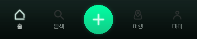
실제 제작한 SVG 에셋 · 402 × 80
처음 정의한 MVP는 ‘홈 · 탐색 · 코스 · 일기’ 네 개의 탭에, 여섯 개 화면으로 시작했습니다. 화면을 늘려가며 확인해보니 코스와 일기가 같은 여행의 앞뒤를 나눠 갖고 있었고, 구조를 다시 묶는 과정에서 아래 세 가지를 결정했습니다.
좌우로 스와이프하거나 화살표로 넘겨보세요 · 초기 MVP 정의안 6화면
MVP의 ‘코스’ 탭과 ‘일기’ 탭은 사실상 같은 여행의 앞뒤였습니다. 최종본에서는 ‘여행’ 탭에서 계획하고 ‘마이’에서 기록을 확인하도록, 기능이 아니라 시점 기준으로 다시 나눴습니다.
MVP에서는 장소를 색면 블록으로 표현했지만, 성지순례의 핵심 경험은 ‘장면을 알아보는 것’입니다. 카드의 주인공을 이미지로 바꾸고 텍스트를 그 위에 얹는 구조로 전환했습니다.
MVP에는 장면 일치율(98%)이 있었지만, 계산 근거를 설명할 수 없는 숫자는 신뢰를 오히려 깎습니다. 검증 여부와 방문 인증 후기로 대체하고, 수치는 데이터가 쌓인 뒤로 미뤘습니다.
린 캔버스로 가설을 정리했지만, 사용성 테스트까지는 도달하지 못했습니다. 만들면서 스스로 걸렸던 지점을 그대로 남겨둡니다.
장소 신뢰도를 AI 요약으로 해결하려 했지만, 요약이 틀렸을 때의 화면을 아직 그리지 않았습니다. 출처 표기와 ‘정보가 달라요’ 신고 동선이 다음 과제입니다.
모든 화면을 콘텐츠가 가득 찬 상태로만 그렸습니다. 성지가 등록되지 않은 작품, 후기가 0건인 장소 같은 빈 상태 화면이 빠져 있습니다.
코스 화면의 소요 시간은 디자인용 예시값입니다. 실제로는 노선 데이터 연동이 필요하고, 그 전까지는 ‘예상’이라는 표기를 어떻게 보여줄지 정해야 합니다.
Hypotheses
흩어진 저장 목록을 이동 시간이 붙은 하루 코스로 묶어주면, 사용자는 직접 동선을 짜지 않고 일정을 만들 것이다.
왜 이것부터인가
1순위 페르소나는 장소를 찾고 저장하는 데까지는 이미 도달해 있다. 그가 실제로 멈추는 지점은 동선 정리 하나이고, 별도 유입 없이 지금 사용자에게서 바로 관측할 수 있다.
어떻게 확인하는가
저장 목록만 있는 화면과 자동 코스가 붙은 화면을 나눠 보여주고, 어느 쪽에서 "이대로 출발하겠다"는 결정이 나오는지 비교한다.
틀렸다고 판단할 조건
"내가 직접 순서를 바꾸고 싶다"는 반응이 다수면, 자동 생성이 아니라 편집 도구로 방향을 틀어야 한다.
장면과 실제 장소를 나란히 보여주면, 추가 검색 없이 그 장소를 저장할 것이다.
왜 두 번째인가
코스 저장 자체를 유도하는 문제는 대상을 2순위 페르소나까지 넓히는 일이다. 1순위에게서 코스 생성의 가치가 확인된 뒤에 손대야 순서가 꼬이지 않는다.
어떻게 확인하는가
장면–장소 카드 10장을 보여주고 "여기가 그 장소라고 믿는지, 저장할 의향이 있는지"를 묻는다.
틀렸다고 판단할 조건
"사진만으로는 확신이 안 선다"가 절반을 넘으면, AI 요약이 아니라 출처 표기와 촬영 위치 데이터부터 다시 설계해야 한다.
작품별 달성률을 미완성 상태로 보여주면, 여행이 끝난 뒤에도 다음 성지를 찾아 앱으로 돌아올 것이다.
왜 마지막인가
첫 여행을 다녀온 사용자가 있어야 측정이 가능합니다. 앞의 두 가설이 통과하지 못하면 관측 대상 자체가 생기지 않습니다.
어떻게 확인하는가
방문 기록을 남긴 사용자가 1주일 안에 다시 탐색 화면에 들어오는 비율을, 달성률 UI가 있는 그룹과 없는 그룹으로 나눠 봅니다.
틀렸다고 판단할 조건
달성률이 “숙제처럼 느껴진다”는 반응이 나오면 게이지를 걷어내고, 기록 자체의 완성도로 방향을 바꿔야 합니다.
문제를 화면으로 옮기는 과정을 좋아합니다.
협업이든 채용이든 편하게 연락 주세요.
송유진 · UI/UX Designer · 서울 기반 · 원격 협업 가능
전체 화면 오버레이 대신 오른쪽에서 밀려 들어오는 드로어를 썼습니다. 뒤에 있던 화면이 살짝 남아 있어야 “어디에서 열었는지”를 잃지 않기 때문입니다. 메뉴는 여행 · 커뮤니티 · 설정 세 그룹으로만 나눠 계층을 한 단계로 유지했습니다.